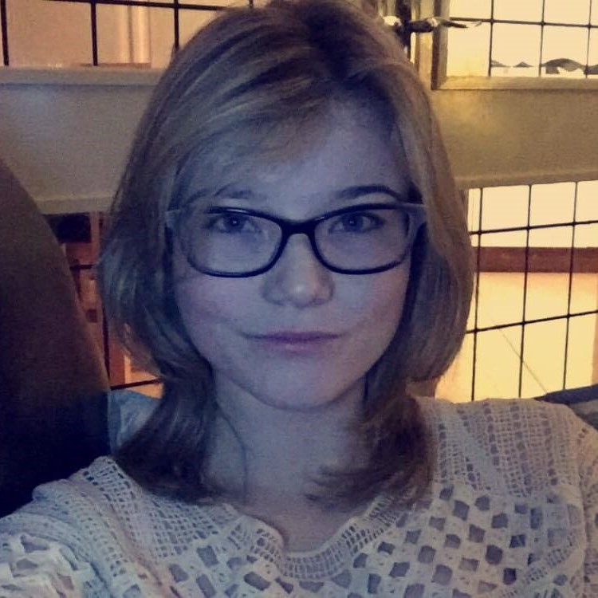

Kerri Sheridan. 18. Year One.
Institute Technology Blanchardstown.

I have just completed my first year of Creative Digital Media in The Institute Of Technoogy, Blanchardstown. After 3 years on this course I will have a B.A. Degree. Upon completing my 3rd year, I hope to continue to 4th year to get my B.A. Honours Degree.
I came into this course with absolutely no knowlegde of Adobe software, film/photogrpahy equipment Web Developement. Since September 2015 I've developed a skill set that continues to grow daily! I have come so far in under a year, I can only imagine the things I will be able to create upon completing this course!
C.D.M Year One has enabled me with a broad skill set in the media world. Because of this there is a range of career paths I could go down such as:
- Graphic Designe
- Photography
- Web Design
- Web Development
- Video Editing
- Audio Editing